很久很久以前就想自己组装电脑了，看到别人能有台高性能的电脑别提有多羡慕了。不过考虑到在校期间实在不适合把自己组装的电脑放到寝室中去，要是把电脑放家里的话只能假期玩短短的几星期，其余的时间闲置下来的话又觉得有些浪费，于是组装电脑的计划一直推延至今。最终在大四校外实习自己租房子之后才有了一个短暂而勉强稳定的环境可以让我组装台式机，所以在安置好自己的住处和一系列其他事情之后，我终于可以实现自己这个埋藏心底多年的愿望之一了。
因包含插图，为了浏览体验我只对图片进行了适量压缩，
网络不好的用户可能需要多花一些时间加载。
配置清单
一边翻着某东的购物车一边写
- CPU + 主板: AMD Ryzen 5 5600X、华硕TFU GAMING B550M-PLUS (WI-FI) 共2477元
- 显卡: 撼讯 RX6600XT 红魔 3599元（之前的是实际买了技嘉 GeForce GT 730D3 529元)
- 内存: 英睿达 美光 DDR4 3200MHz 8Gx4 864元
- 固态硬盘: 西部数据 SN750 SE 1TB 929元 + 英睿达 美光 MX500 2TB 1299元
- 机箱: 先马 鲁班1 199元
- 电源: 长城 金牌电源 V7-700W 475元
- CPU散热: 利民AK120 PLUS 169元
- 机箱散热: 利民 TL-R12 三个12CM风扇 119元 + 先马冰洞 风扇套装 3个12cm风扇49元
- 显示器：优派 VX2480-HD-PRO-3 165HZ 1143元
- 其他: 扎带5.5元 理线带 9.9元 追风者CMBO灯带 400mm两条 90元
因为我之前用笔记本时已经有一个 ikbc c87 红轴机械键盘和 罗技 G304 无线鼠标 以及之前弄拓展屏时买了 戴尔 U2419HS 显示器，所以这些配件我就不再列入装机清单里面了。
排除显卡的话，整体配置全下来大概花了6.6K左右，有些配件是买完以后京东又降价了于是申请了价格保护退了一些回来。显卡打算以后等价格恢复正常后再买。所以现在买的是英伟达730D，尽管是亮机卡但是我还是决定多花一点预算去自营店买一张靠谱的全新卡，这样就算以后我换显卡了，这张旧的730还可以拿去给亲朋好友的上古时代老电脑“升级”一下。
后续在旗舰店买了RX6600XT红魔，这卡可以说是AMD入门级显卡的旗舰款了。除此之外还买了一个高刷1080P显示器，然后买了3个不带灯光的纯白静音风扇和两条ARGB灯带用来装饰。所以整体算下来整机开销大约在12K左右。
主板觉得华硕重炮手B550M就已经蛮符合我自己的需求了，在B站上看了一下B550的评测发现华硕的重炮手要比微星和技嘉的迫击炮强一些（也贵了好几百元），所以决定多花些预算上一张性能强一点的主板，为后续的升级留一些空间（不过我觉得就这配置已经很够用了没啥好升级的了
因为AMD R7 5800X太贵了有点超预算，所以决定买的R5 5600X，除了核心数少了一些（跑编译少几个线程）之外，性能对于现在的日常使用来说已经很足够了。肯定比我笔记本上的R7 4800H强许多。
因为自己打算在电脑装Linux + Windows双系统，所以实际上我给电脑装了2条NVME固态（SN750 SE 1T + 降速的SN550 1T），然后还配了2T的英睿达MX500，以后可能根据需要还会买几个机械硬盘存数据用。
因为CPU散热不带灯光，尽管我不喜欢RGB那种太花里胡哨的效果，但是还是得买几个有光亮的机箱风扇，因为预算有限而且不装显卡暂时对散热要求不高，所以我只买了比较便宜的风扇，不然机箱黑咕隆咚的太不好看了，以后有需要的话再修改。
后来咱又买了两条ARGB的灯带，然后花了一段时间把它安装到机箱里面，咱并不喜欢RGB，不过我还是希望机箱能有些观赏性的灯光。
在B站找了几个电源测评介绍的视频看了一下，就买了长城的700W金牌电源，价格比较便宜不是一元一瓦，目前来讲我不装显卡就日常待机的话整体功率都不会超100W，主要是电费太贵了。
不过现在来看RX6600XT的功耗最高也就150W，（应该给这显卡贴个一级能效标识），所以电脑就算满载使用最高也就不到500W的功耗，日常使用的话显卡功耗只有20-30W，超级节能！
从网上挑了很久的机箱发现实在没有比较便宜又顺眼的，一开始想买白色机箱来着，后来发现白色机箱要么就是奇葩风道要么就是超预算，所以最终决定买先马鲁班1黑色机箱，尺寸够大对散热和主板显卡长度几乎没有限制，不用买配件时总计算空间大小了。
配置是周五定下来就从京东上买的，因为基本上都是自营，周六当天就全收到货了。所以周六+周日两天一顿折腾就把电脑装好。一开始还比较担心会不会安错，哪里出问题需要返工这类的情况，实际上装机十分顺利。除了理线花了一些时间以外其他都基本上是一次装齐直接点亮装系统，其实第一次装好机插电源后按开机键怎么也点不亮，当时吓够呛然后拔掉开机跳线检查是不是接线有问题。后来才发现是自己脑残电源开关开反了主板没通电肯定点不亮。
防呆不防傻， 那么你能帮帮我吗？（逃
装机
我装机时为了防止装错顺序返工，于是去B站搜了一个教程：【BV1jE411e7hw】，照着这个顺序安装基本不会出错，而且比较常见的问题视频上都有提到，比如萌新不是十分熟悉的内存插槽优先级以及比较难弄的前面板跳线。
以下图片除了背部理线的那张图是用手机(iPhone XS)在弱光环境拍摄的，其余都是用相机(佳能EOS 800D + 适马17-50)拍摄，设备不是很好，技术有限，使用RawTherapee进行适量的裁剪调色
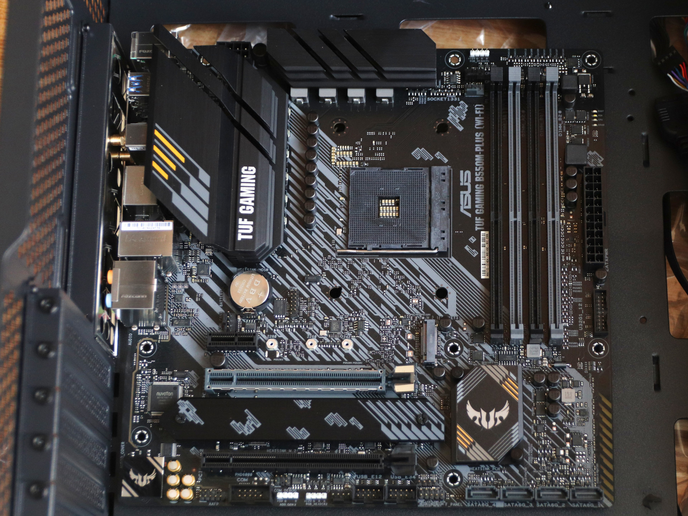
主板
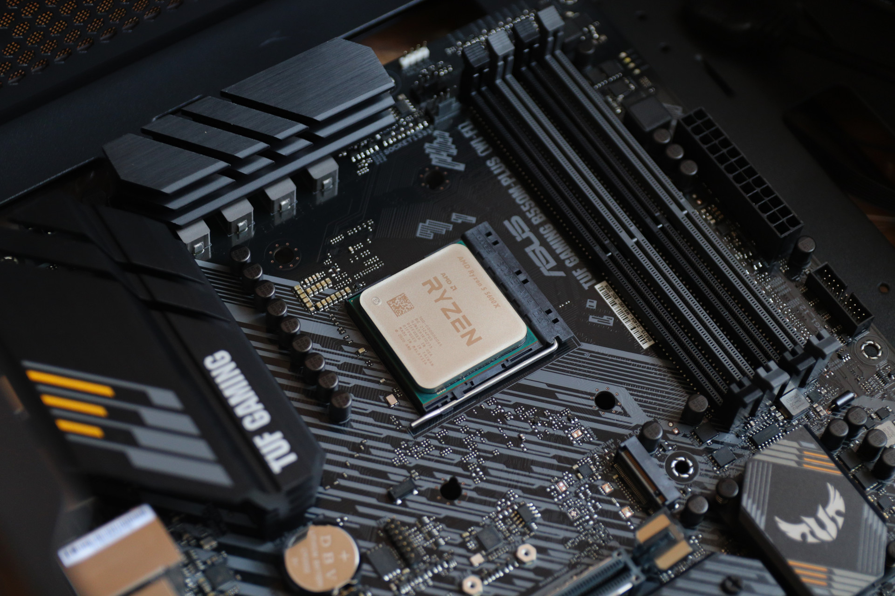
AMD R5 5600X
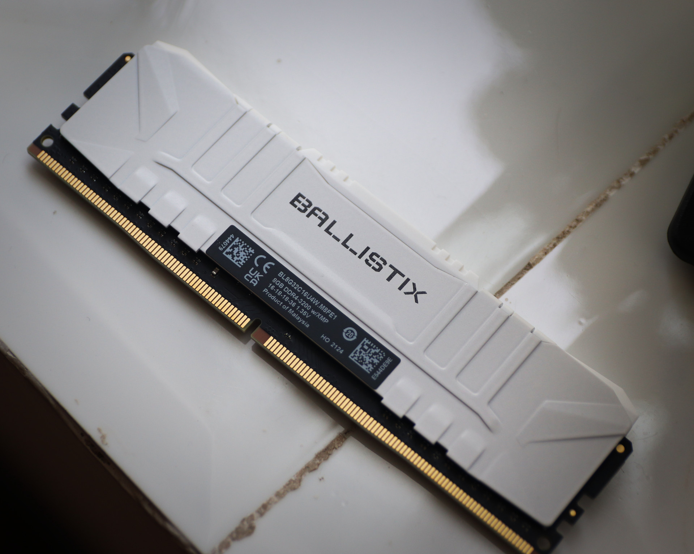
内存
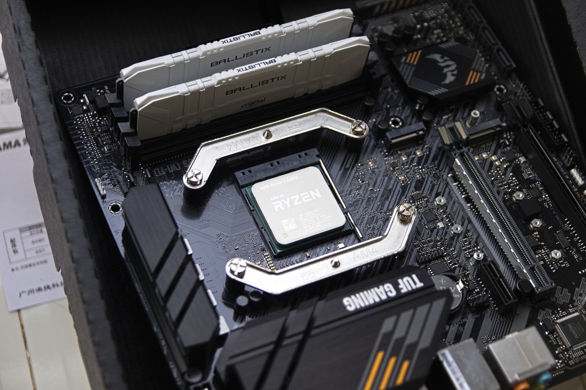
散热模具
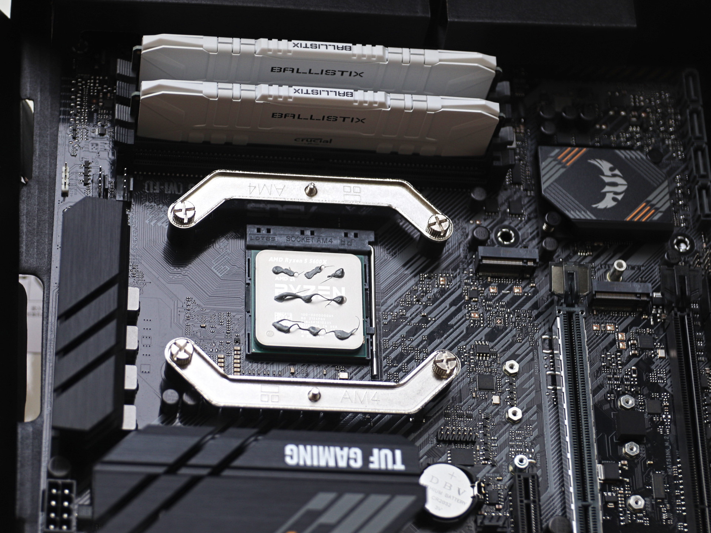
涂抹硅脂
因为散热器赠的利民TF7硅脂比较干，所以我直接点9个点然后就扣散热器了。觉得没必要像网上有人那样戴手套把硅质抹匀抹平，也不用特别在意硅脂会不会留气泡，总觉得这些不会对散热有太大影响。
毕竟用一年左右就得拆下来换新硅脂，到时候只要硅脂别太干粘住直接把CPU连根拔起就行。
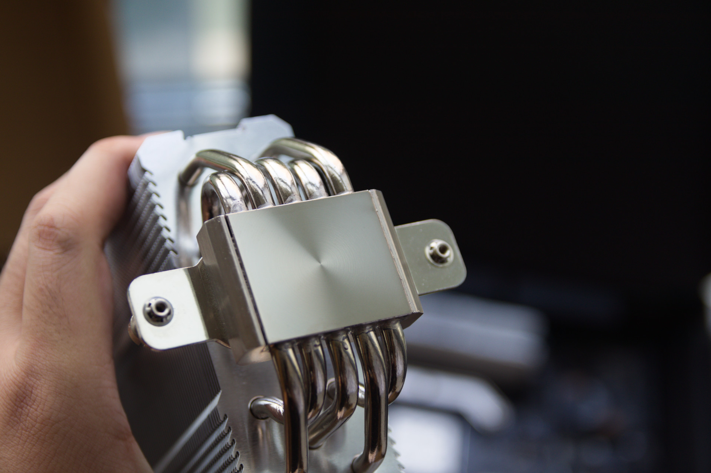
散热器底部
特地拍了一张照片以确认我把散热器底下的膜撕掉了。
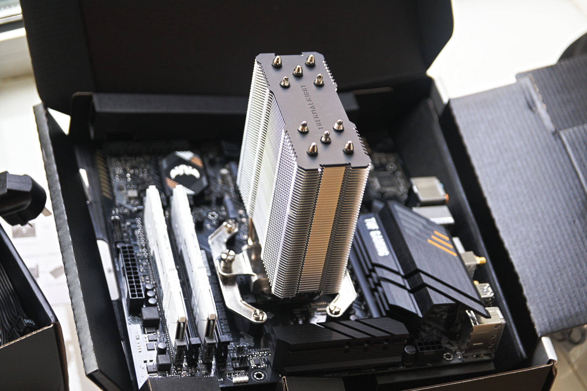
安装散热器
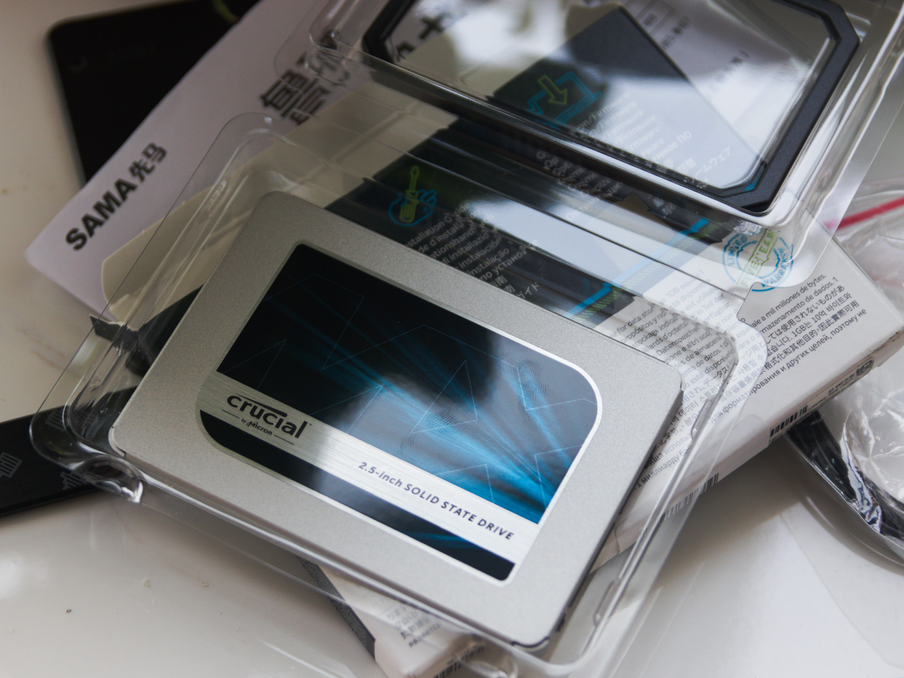
固态硬盘
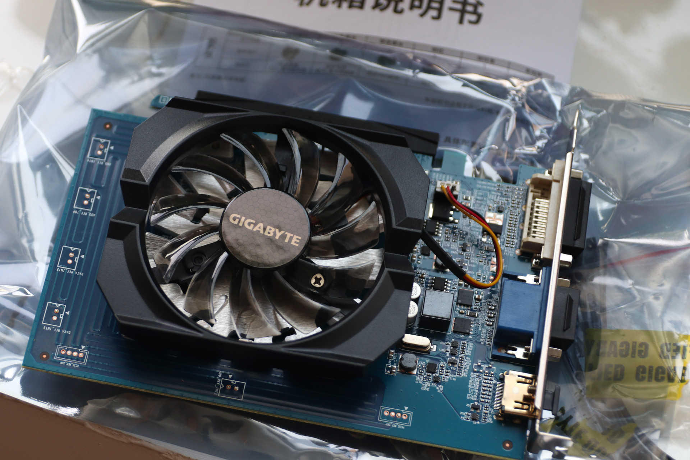
亮机卡
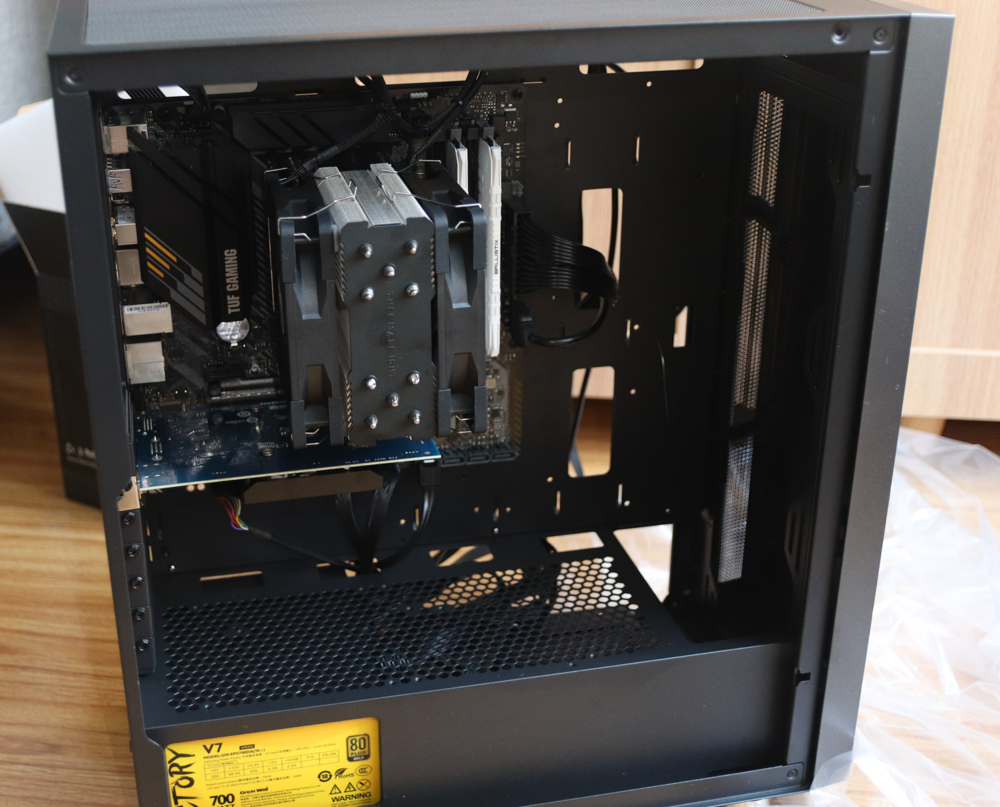
装好的效果
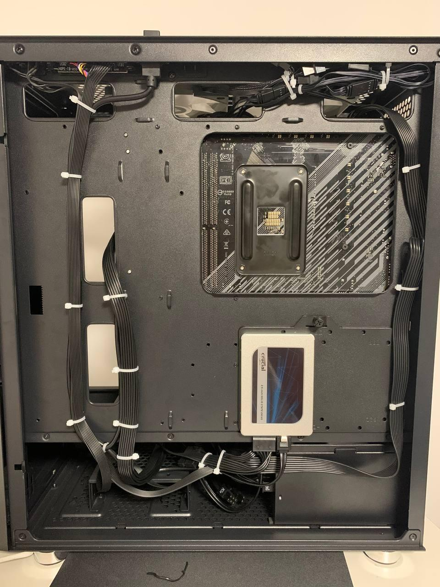
理线后的效果
背面理线花了好几个小时把不同种类形状的线绑了起来，最顶上的风扇RGB灯光线实在没有空间收纳于是只好捆成一坨放在那。
最终成果展示
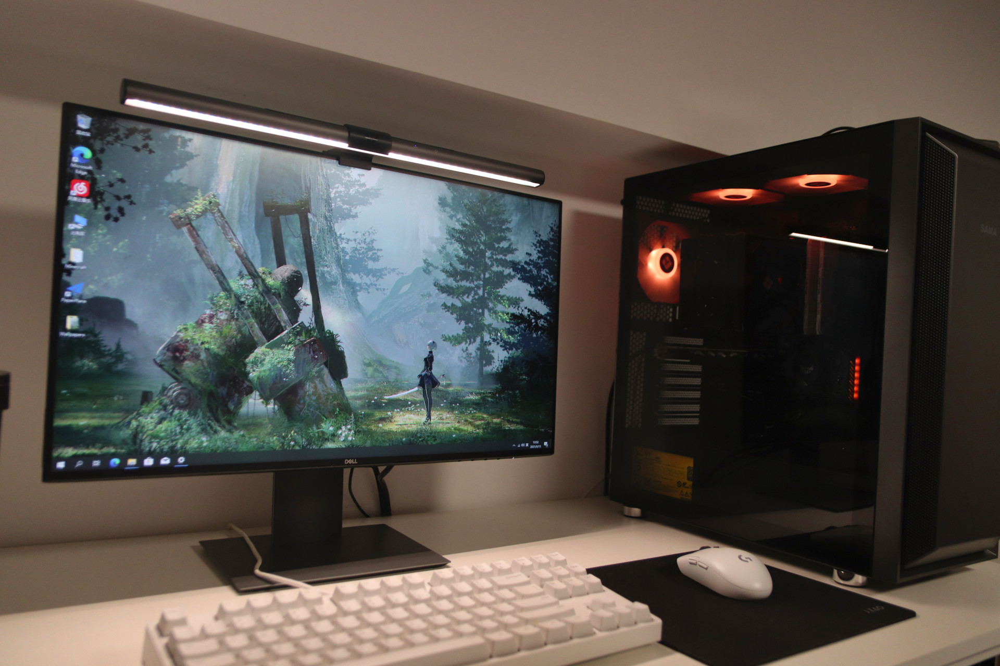
最终成果演示
装好Windows，安装华硕主板的软件，把风扇的灯调成了橙色长亮的模式。一开始调成浅蓝色觉得色温太低了有点冷，所以改成了暖色调。
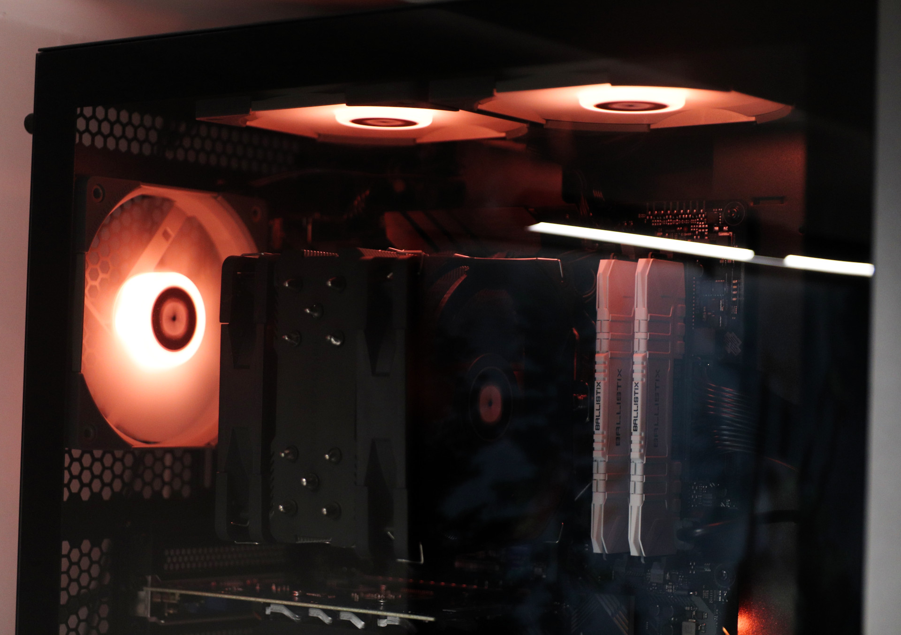
暖色
给机箱内部拍一张特写，现在正在考虑要不要买一个手办放进去。
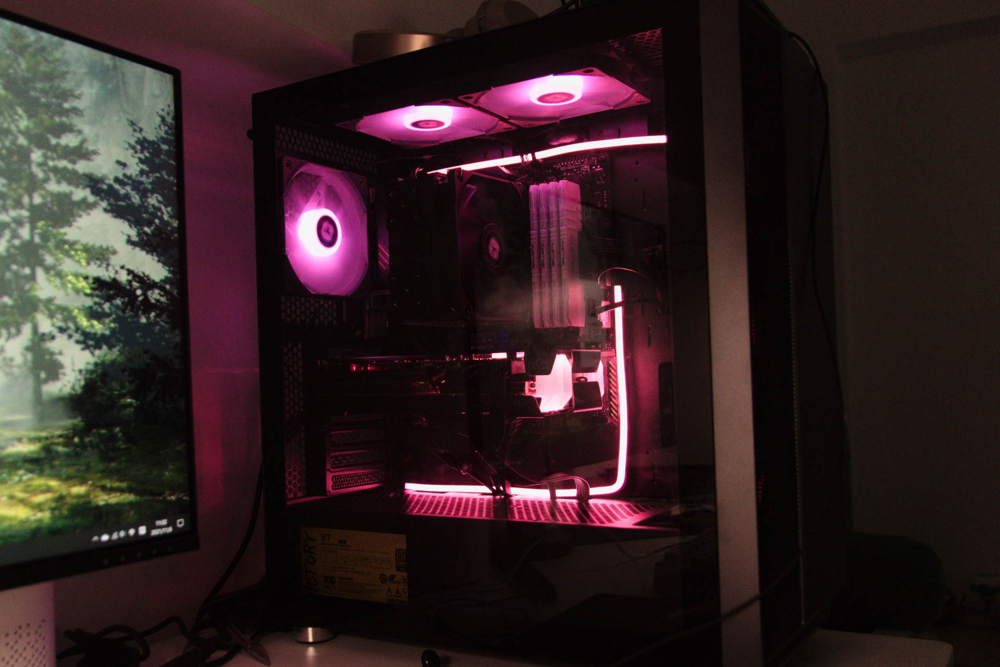
少女梦幻粉
后来买了新显卡和ARGB灯条后，把4根内存插满，设置好显卡的神光同步，把机箱颜色调成了“少女梦幻粉”。
（相机的夜景效果不太好，所以看起来有些晃眼而且丑，实际上这颜色还是很好看的）
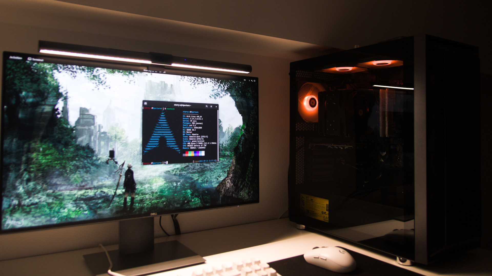
Arch Linux
装好Arch Linux后的最终效果。
最终我决定还是把机箱放在桌子上好一些，这样不但能透过玻璃“欣赏”内部构造，还不用担心底部电源的风扇“吸尘器”吸进去很多灰尘。
机箱内部风道我也是采用的网上最推荐的风道方式，底部和右边为进风口，顶部和左边为出风口。因为现在没有显卡发热量并不大所以我只安装了左边的一个风扇和顶部的两个风扇。
以后可能再买个手办和灯放到电源仓的上边，再搞点装饰。
为什么买了RX6600XT
其实咱一开始是想买RTX3060Ti的，但是因为老黄溢价实在太高（NVIDIA f**k you），狗东双十一耍猴，所以去ytb看了一下评测发现这A卡可以通吃1080P全部的游戏（实际上2K很多游戏也全都能玩），而且价格比3060便宜许多，然后一想3060Ti的确有些性能过剩，而且N卡的Linux驱动真的很拉跨（尽管最近一阵子更新了很多东西但是真的就是不想再折腾N卡驱动了）。
然后就是，如果真的玩fps游戏的话，有谁会真的开极高画质上2K144呢。咱玩守望除了把材质调最高之外其他都是最低，3A大作的话咱也就玩过尼尔和底特律，而且咱不玩赛博朋克2077，而且咱主要还是Linux用户。所以真的没必要花首发价2倍的钱去买一个所谓的能在2K分辨率下全高画质流畅运行游戏的显卡。更值得吐槽的是，现在网上一搜显卡评测，给人的感觉就是游戏不开极高画质就好像不能玩了一样，还有很多人还拿A卡开光追后的帧数和N卡作比较，说实话我本人对光追真没什么好感，我玩的这些游戏里没有支持光追的，而且就算玩支持光追的游戏，开光追也看不出多大差距来。
网上有很多评测视频说这显卡显存位宽只有128比特，只支持PCIE4.0x8，核心面积小啊，丐中丐不值三千块钱这个价之类的一大堆缺点，不过这卡实际体验并没有网上传的那么不堪。它实际的游戏效果还是很好的，所以真没必要非拿硬件参数说事，缺点有是有，但影响并不大。
实际上手体验后，这显卡日常待机时风扇转都不转，温度只有40-50度，功耗在20-30W之间肥肠节能。Linux里面卸载掉NVIDIA一大堆驱动后，安装amdgpu驱动直接就能用，没遇到过任何问题。
（要不是因为刚需，谁会在这个时间点上买显卡…
游戏体验
守望先锋高画质（我不开极高画质），训练靶场或者进比赛帧数400fps直接跑满，打团时帧数大约下降到320-350之间。（正常人是不会在打团时盯着屏幕左上角看帧数变化的）
Minecraft Java Edition 1.16.4 + Optifine（咱加了这么多定语是因为Minecraft有很多版本，而且还有很多用来改善画质或性能的Mod）：
不知是MC的优化不好还是遇到了CPU瓶颈还是显卡驱动的问题，玩MC时帧数平时会有250帧，但是一到红石机器多的地方或者全物品分类机这类的地方，帧数就掉到了140帧以内，虽然帧数并不高（实际上也不低了），但是已经很流畅了，只不过对生电玩家不太友好。
值得一提的是，这显卡在玩MC时功耗也只有30瓦左右，而且大多数时间风扇都不转，真的太环保了（
Arch Linux
整个安装Linux的过程十分顺利，不像笔记本那样经常遇到许多奇奇怪怪的问题。加上走的独显直连没有麻烦的双显卡混合交火，基本上是装好自己需要的软件后开机就直接用了。
之前联想R7000P那个笔记本还经常无法调节屏幕亮度，TTY下面的警报“滴”声大得吓人，以前还遇到过nvidia+amdgpu+gnome进wayland就黑屏的问题（现在nvidia升470已经修复了）。
曾经用的那个惠普更是因为英伟达显卡驱动和惠普奇葩的硬件在linux5.0内核之前经常出现黑屏死机这些问题，而且不开启独显的话就没办法连双显示器。
所以还是台式机最香，觉得硬盘不够用了我就可以买块新硬盘扯根线扩容，主板上有4个内存插槽够我插很多根内存。CPU也都是可拆卸的只要主板支持我还可以继续升级，而且我可以选择没有集成显卡的CPU，显示器直连独显不用被那些驱动问题弄得头疼。
Others
其实最初我是想把装机的过程录下来拍成VLOG的，但是租的房子空间有限加上不想露脸，我一说话还会紧张不会组织语言，而且我没带三脚架，所以为了节省体力我只是拍几张照片放到博客上。
尽管现在这个电脑显卡很差不能打大型游戏，但是他的强悍的CPU性能已经足够我干很多事情了。 一开始想测试一下CPU性能于是下载了Linux内核，用默认生成的config，make -j12编译。然后找个工具(lm_sensors)查看一下CPU温度。当我还没配好配置文件时突然发现内核他编译好了。
然而除了写代码之外我暂时还没想好什么其他的使用这个电脑的方法。因为有点舍不得电费加上没有公网IP所以我也不打算把它当服务器用。
可能有人会更关心我在北京实习的相关事情，其实我并不是不想写在博客里面，而是想等过几个月有了一个比较完整的实习体验后再写，因为最近每天都很忙而且心情变化很复杂，毕竟自己一个人离开学校到北京。所以我不想把某一刻的心情写在博客上当作我这一阵子的整体体验，现在还不是做总结的时候（心情好的话，也许我会写在今年年终总结上吧）。
后续
2022-02-26补充:
咱给这个电脑换了新的机箱，考虑了一下如果把换新机箱的内容添加到这里的话，会对原有的我组装电脑的内容产生影响，所以我新开了一篇博客，感兴趣的可以去看：电脑换壳——先马趣造。
以后组装电脑相关的博客，都会在标签 台式机 里面找到。
STARRY-S